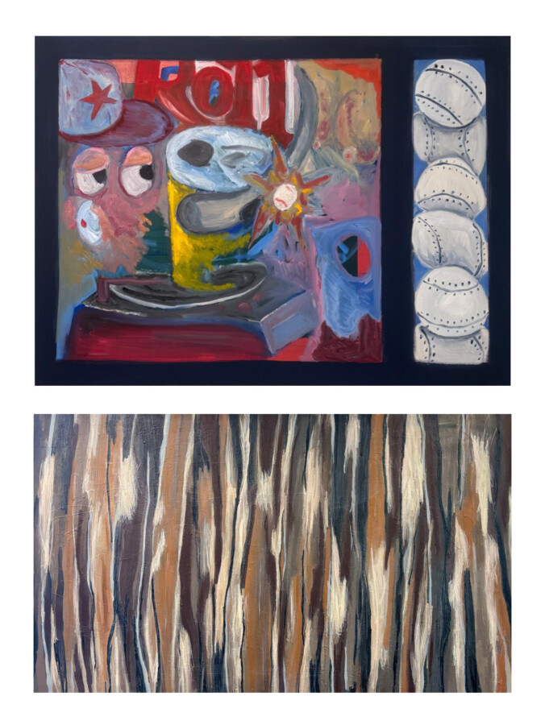

Convergence
Katherine Ratay’s paintings offer a visual field where feeling takes form, where movement becomes a kind of map, and where the act of looking can become as active as the act of painting. She paints with movement—each gesture a response to the last, each layer a token of time, experience, and intuition. The surface becomes a record of impulse and revision, where transparency and density speak to the tension between control and release.
Alfred Will’s work takes inspiration from everyday images and interactions which are then blended with his language of abstraction. Space in his paintings is being dictated by form and line. Some are carved out and some are flattened. Some are shown, some are told. This creates a crowded area filled with things vying for attention, but eventually settle into harmony.
Both artists are interested in controlling the viewing experience with a combination of surface that is constructed and uncovered simultaneously; playing with covering and erasing so the viewer might form a deeper understanding of the process of painting.